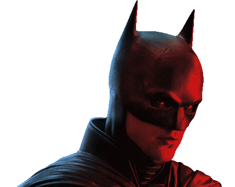
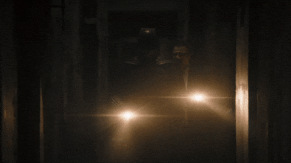
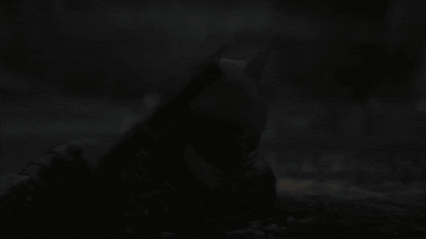

"Eles pensam que estou escondido nas sombras, porém eu sou as sombras..."
"The Batman" acompanha Bruce Wayne (Robert Pattinson) em seu segundo ano como o Homem-Morcego, aterrorizando criminosos em Gotham. Com apenas Alfred e o detetive Gordon como aliados, ele investiga uma série de crimes enigmáticos deixados pelo Charada. A trama revela uma rede de corrupção ligada à família Wayne, colocando em dúvida o legado de seu pai, Thomas. Batman precisa formar novas alianças para expor a verdade e combater a corrupção que domina a cidade.
O Batman assume o papel de detetive, investigando uma série de crimes meticulosamente planejados pelo Charada. Cada assassinato traz pistas e charadas direcionadas a ele, forçando Bruce a mergulhar mais fundo na corrupção de Gotham e a encarar verdades dolorosas sobre o passado de sua família.

Os assassinatos cometidos pelo Charada têm como alvo figuras públicas de alto escalão, revelando a podridão nos bastidores da cidade. À medida que os segredos vêm à tona, a confiança do povo em seus líderes é destruída, criando um cenário de caos e desespero em Gotham.
Durante a investigação, Bruce Wayne começa a perceber que ser o Batman vai além de inspirar medo. Ele precisa ser um símbolo de esperança. Essa transformação marca uma mudança significativa no personagem, que passa de um vigilante solitário para alguém disposto a se sacrificar pelo bem maior.
